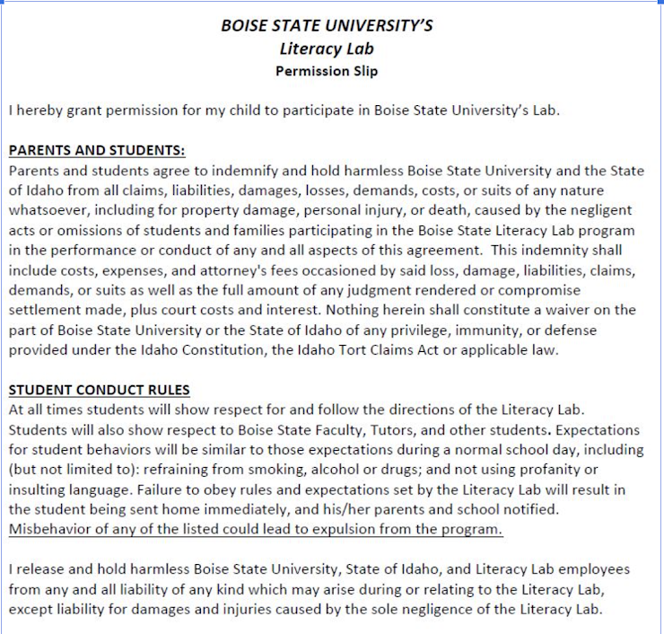

<div id="application">
  <div class="form-container">
    <div class="title">
      <h1>Literacy Lab Tutoring Application</h1>
    </div>
    <div class="form">
      <mat-stepper [linear]="true" #stepper class="stepper">
        <mat-step [stepControl]="prelimFormGroup">
          <ng-template matStepLabel>Preliminary Information</ng-template>
          <div class="preamble">
            <p>
              *PLEASE FILL OUT THIS FORM FOR EACH CHILD THAT YOU WOULD LIKE
              CONSIDERED FOR TUTORING. For example, if you have two children you
              want to be tutored, fill this form out twice, once for each child.
              This application is lengthy, but we try to collect enough
              information so that our tutors are able to prepare for your
              child's specific needs. If you know of other families who may be
              interested in tutoring, please share this survey link with them.
            </p>
            <p>
              Thank you for your interest in the Boise State University Literacy
              Lab! While we accept tutoring applications year round, tutoring
              enrollment happens twice per year - once at the beginning of the
              spring semester and once at the beginning of the fall semester.
              Tutoring is held from 4:30-5:30pm MST on Tuesdays and Thursdays
              beginning in mid-February (for spring semesters) and mid-September
              (for fall semesters).
            </p>
            When applications are completed, they are considered for the nearest
            semester, unless we are full at that time. Our enrollment is limited
            based on the number of tutors we have each semester, but we try to
            serve as many families as possible. When we can confirm that we have
            a tutor for your child, you will be notified through email. However,
            please feel free to contact us to check the status of your
            application at any time. If we happen to be full when we receive
            your application, we will notify you through email.
            <p>
              The Boise State Literacy Lab tutors are undergraduate pre-service
              teachers (that is, undergraduate students who are taking classes
              to become teachers). They are enrolled in a course focused on
              literacy assessment and instruction, and part of their coursework
              involves tutoring a child under the supervision of lab
              supervisors. Unfortunately, a tutor may have to drop the course.
              If this happens, we likely will not have an additional tutor for
              your child, but we will refund your money and try our best to hold
              a spot for your child for the following semester.
            </p>
            <p>
              PLEASE NOTE: Children in the Lab will be tutored either one-on-one
              (with one tutor) or in a small group of children (with two tutors)
              through Zoom. A parent or guardian will need to be present during
              the full tutoring time to support their child as needed.
            </p>
          </div>
          <button mat-button matStepperNext>Next</button>
        </mat-step>
        <mat-step [stepControl]="firstFormGroup">
          <form [formGroup]="firstFormGroup" class="agreements">
            <ng-template matStepLabel
              >Agreements/Permissions & Payments</ng-template
            >
            <div class="field-title">
              DOCUMENTATION OF POLICY AGREEMENT: Type your name indicating you
              have read and agree to the Boise State University Policies written
              in the permission slip below.
            </div>
            <div class="informed-consent">
              
            </div>
            <mat-form-field>
              <mat-label>Policy Agreement</mat-label>
              <input matInput formControlName="PolicyAgreement" />
            </mat-form-field>

            <div
              class="error"
              *ngIf="isStep1Valid && PolicyAgreement?.errors?.['required']"
            >
              This is a required field
            </div>
            <div class="field-title">
              <p>
                Boise State University Informed Consent Study Title: Literacy
                Center Efficacy
              </p>
              <p>
                Principal Investigators: Dr. Katherine Wright & Dr. Hannah
                Carter
              </p>
            </div>
            <div class="informed-consent">
              
              
            </div>
            <div class="field-title">
              DOCUMENTATION OF CONSENT: I have read the two-page form seen above
              and have decided that my child's data can be used by the lab to
              study child and pre-service teacher learning.
            </div>
            <mat-form-field>
              <mat-label>Child Data Consent</mat-label>
              <mat-select formControlName="ChildDataConsent">
                <mat-option value="true">Consent is granted</mat-option>
                <mat-option value="false">Consent is not granted</mat-option>
              </mat-select>
            </mat-form-field>

            <div class="field-title">
              I hereby grant permission to Boise State University to shoot
              photographs of my child(ren) while participating in the Boise
              State Literacy Center Literacy Lab. I understand that the
              photograph(s) taken of my child(ren) are the property of Boise
              State and may be used for the advancement and promotion of the
              university by its Office of Communications and Marketing and by
              the College of Education and for no other purpose except for that
              stated above.
            </div>
            <mat-form-field>
              <mat-label>Photo Release Consent</mat-label>
              <mat-select formControlName="PhotoReleaseConsent">
                <mat-option value="true">Yes</mat-option>
                <mat-option value="false">No</mat-option>
              </mat-select>
            </mat-form-field>
            <div class="field-title">
              Tutors are required to record all Zoom tutoring sessions to
              receive feedback on their teaching and are required to collect all
              work samples from your child for review. All recordings and work
              samples will be kept secure and will only be used for educational
              and course related purposes. Please type your name below
              indicating you understand that all Zoom tutoring sessions will be
              recorded for educational purposes and that you will be required to
              send the tutor work samples after each tutoring session.
            </div>
            <mat-form-field>
              <mat-label>Zoom Consent</mat-label>
              <input matInput formControlName="ZoomConsent" />
            </mat-form-field>
            <div class="field-title">
              While we will not be physically in the Literacy Lab, we still hope
              to use a combination of tangible books and digital texts. Tutors
              will prepare a list of books that are readily available at local
              libraries. Please type your name below indicating you are able and
              willing to go to a local library (or purchase if you prefer) the
              book list from your tutor.
            </div>
            <mat-form-field>
              <mat-label>Book Acknowledgement</mat-label>
              <input matInput formControlName="BookAcknowledgement" />
            </mat-form-field>
            <div class="field-title">
              The cost for enrollment in the Literacy Lab is $175 per child per
              semester, which is due when you apply. If you have not paid
              already, please do so by clicking the link below or by pasting it
              into your browser.
              <a href="https://commerce.cashnet.com/boisestateLiteracyLab">
                https://commerce.cashnet.com/boisestateLiteracyLab
              </a>
              If your family is unable to pay for tutoring in full, please note
              that below, and we will contact you. Otherwise, please note below
              that your payment has been made.
            </div>
            <mat-radio-group formControlName="NeedFinancialAssistance">
              <mat-radio-button value="false"
                >I have paid in full</mat-radio-button
              >
              <mat-radio-button value="false"
                >Our family is in need of financial assistance for tutoring, and
                we are interested in learning about scholarship
                opportunities.</mat-radio-button
              >
            </mat-radio-group>
            <div>
              <button mat-button (click)="stepper.previous()">Back</button>
              <button mat-button (click)="stepper.next()">Next</button>
            </div>
          </form>
        </mat-step>
        <mat-step [stepControl]="secondFormGroup">
          <ng-template matStepLabel>Family Information</ng-template>
          <form [formGroup]="secondFormGroup" class="fam-info">
            <mat-form-field>
              <label>Secondary Guardian First Name (If Applicable)</label>
              <input matInput formControlName="Guardian2FirstN" />
            </mat-form-field>
            <mat-form-field>
              <label>Secondary Guardian Last Name (If Applicable)</label>
              <input matInput formControlName="Guardian2LastN" />
            </mat-form-field>
            <mat-form-field>
              <label>Secondary Guardian Phone (If Applicable)</label>
              <input matInput formControlName="Guardian2Phone" />
            </mat-form-field>
            <mat-form-field>
              <label>Secondary Guardian Email (If Applicable)</label>
              <input matInput formControlName="Guardian2Email" />
            </mat-form-field>
            <mat-form-field>
              <label>Emergency Contact Name</label>
              <input matInput formControlName="EmergencyConName" />
            </mat-form-field>
            <mat-form-field>
              <label>Emergency Contact Relation</label>
              <input matInput formControlName="EmergencyConRelation" />
            </mat-form-field>
            <mat-form-field>
              <label>Emergency Contact Phone</label>
              <input matInput formControlName="EmergencyConPhone" />
            </mat-form-field>
            <div>
              <button mat-button (click)="stepper.previous()">Back</button>
              <button mat-button (click)="stepper.next()">Next</button>
            </div>
          </form>
        </mat-step>
        <mat-step [stepControl]="thirdFormControlGroup">
          <form [formGroup]="thirdFormControlGroup" class="child-info">
            <ng-template matStepLabel>Child Information</ng-template>
            <label>
              Has your child participated in the Literacy Lab before?</label
            >
            <mat-form-field>
              <mat-label>Your Answer</mat-label>
              <mat-select formControlName="PreviousChildParticipation">
                <mat-option value="true">Yes</mat-option>
                <mat-option value="false">No</mat-option>
              </mat-select>
            </mat-form-field>

            <label>
              If your child has participated in the Literacy Lab before, what
              was semester and year?</label
            >
            <mat-form-field>
              <mat-label>Your Answer</mat-label>
              <input matInput formControlName="WhatSSemester" />
            </mat-form-field>
            <label>What school does your child currently attend?</label>
            <mat-form-field>
              <mat-label>Your Answer</mat-label>
              <input matInput formControlName="ChildCurrentSchool" />
            </mat-form-field>
            <label>What languages are spoken in your home?</label>
            <mat-form-field>
              <mat-label>Your Answer</mat-label>
              <input matInput formControlName="ListLanguagesSpoken" />
            </mat-form-field>
            <label
              >Has your child received special education services? If so, please
              explain otherwise type N/A</label
            >
            <mat-form-field>
              <mat-label>Your Answer</mat-label>
              <input matInput formControlName="ReceivedSpecialEd" />
            </mat-form-field>
            <label>
              What type of difficulties/challenges with reading, writing, or
              both do you or your child's teacher observe?</label
            >
            <mat-form-field>
              <mat-label>Your Answer</mat-label>
              <input matInput formControlName="ListChallenges" />
            </mat-form-field>
            <label>
              How long have you been concerned about these
              difficulties/challenges mentioned above?</label
            >
            <mat-form-field>
              <mat-label>Your Answer</mat-label>
              <input matInput formControlName="HowLongConcerned" />
            </mat-form-field>
            <label>
              What do you hope your child will gain from tutoring? *</label
            >
            <mat-form-field>
              <mat-label>Your Answer</mat-label>
              <input matInput formControlName="DescribeHopes" />
            </mat-form-field>
            <label>
              Does your child have any allergies or take any medications? If so,
              please list otherwise type N/A</label
            >
            <mat-form-field>
              <mat-label>Your Answer</mat-label>
              <input matInput formControlName="ChildAllergyMeds" />
            </mat-form-field>
            <label>
              Is there anything else you would like to share about your child
              that is important for us to know for their success during
              tutoring?</label
            >
            <mat-form-field>
              <mat-label>Your Answer</mat-label>
              <input matInput formControlName="MiscInfo" />
            </mat-form-field>
            <label>
              How did you first learn about the Boise State Literacy Lab?
            </label>
            <mat-form-field>
              <mat-label>Your Answer</mat-label>
              <input matInput formControlName="HearAboutLitLab" />
            </mat-form-field>
            <div>
              <button mat-button (click)="stepper.previous()">Back</button>
              <button mat-raised-button color="primary" (click)="submit()">
                Submit
              </button>
            </div>
          </form>
        </mat-step>
      </mat-stepper>
    </div>
  </div>
</div>
